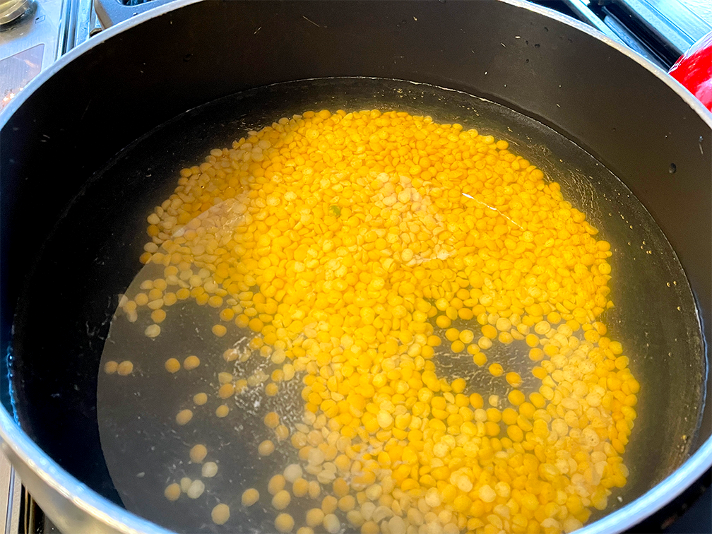
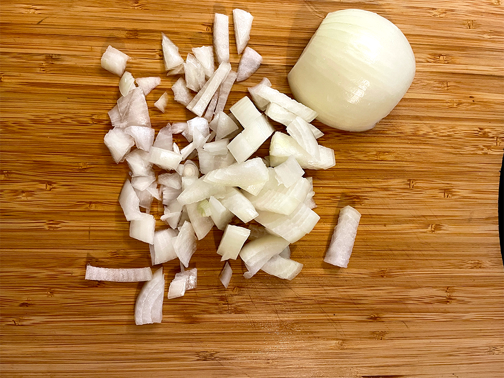
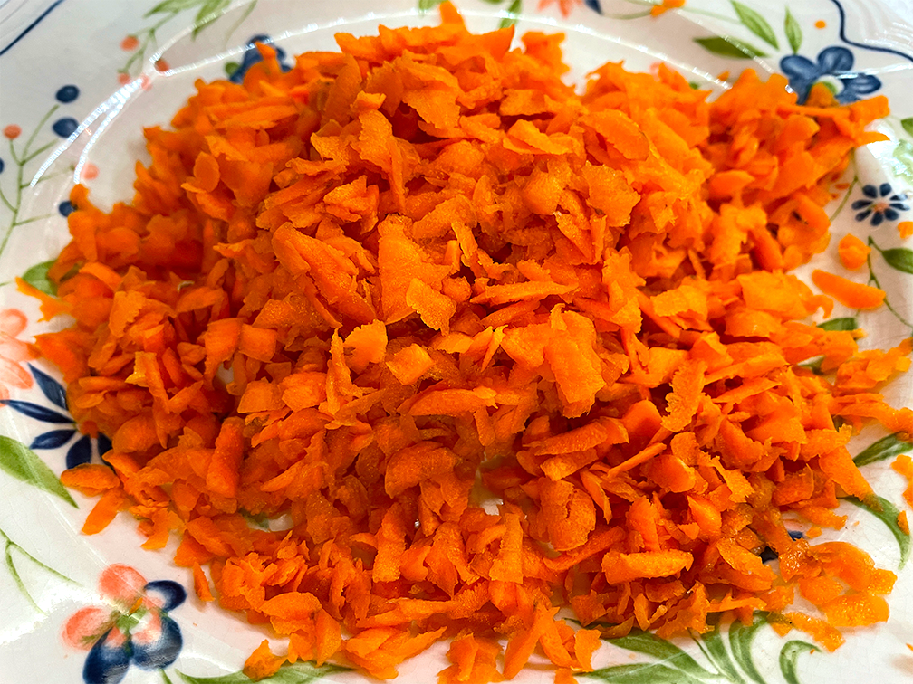
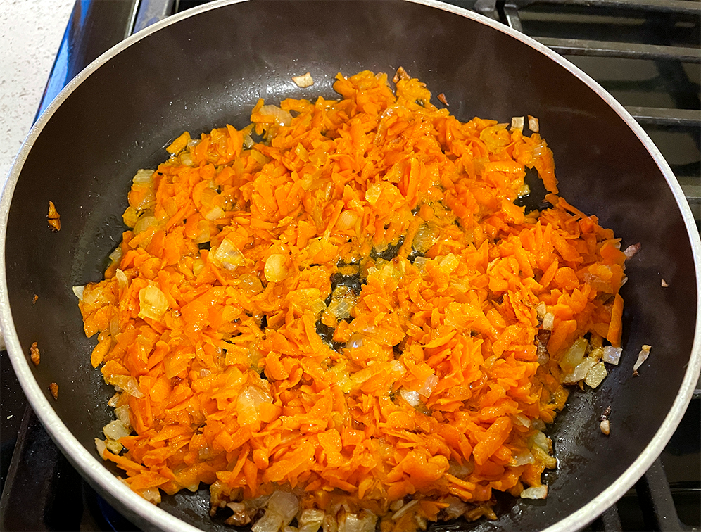
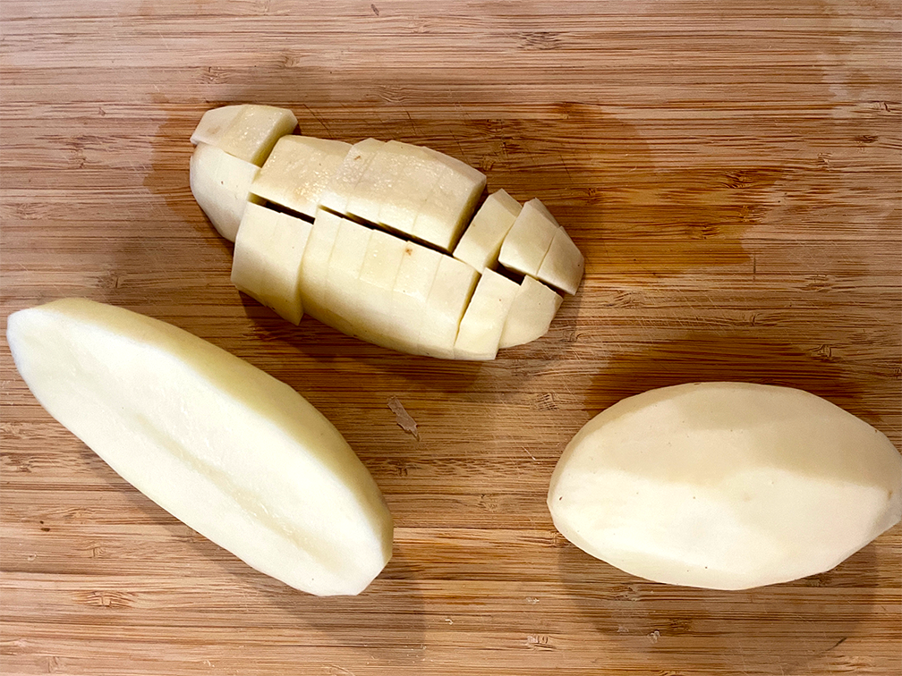
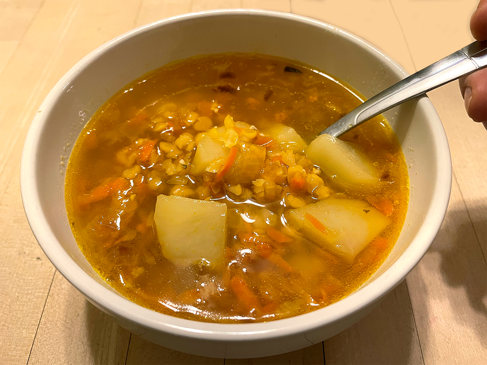

<!DOCTYPE html>
<html lang="en-US">
  <head>
    <title>Vegan Pea Soup</title>
    <!-- to avoid weired symbols -->
    <meta charset="utf-8"/>
    <!-- responsive -->
    <meta name="viewport" content="width=device-width, initial-scale=1.0"/>
    <meta http-equiv="X-UA-Compatible" content="IE=edge,chrome=1"/>
    <meta name="HandheldFriendly" content="true"/>

    <!-- manifest -->
    <link rel="manifest" href="../manifest.json" crossorigin="use-credentials">

    <!-- google metatags -->
    <meta name="description" content="Vegan Pea Soup" />

    <!-- facebook metatags -->
    <meta property="og:url" content="hungry-vegetarian.com/pea-soup" />
    <meta property="og:type" content="article" />
    <meta property="og:title" content="Vegan Pea Soup" />
    <meta property="og:description" content="Cheap and quick soup recipe. As a kid, I used to hate this soup; I cannot tell you why. As an adult, sometimes, I crave for it so badly that nothing can stop me from making it even in the middle of the hot summer night." />
    <meta property="og:image" content="pea-soup/img/bowl-soup.png" />
    <meta property="fb:app_id" content="511634172766587" />

    <!-- LinkedIn metatags -->
    <meta property='og:title' content='Vegan Pea Soup'/>
    <meta property='og:image' content='pea-soup/img/bowl-soup.png'/>
    <meta property='og:description' content='Cheap and quick soup recipe. As a kid, I used to hate this soup; I cannot tell you why. As an adult, sometimes, I crave for it so badly that nothing can stop me from making it even in the middle of the hot summer night.'/>
    <meta property='og:url' content='hungry-vegetarian.com/pea-soup' />

    <!-- pintrest metatags -->
    <meta property="og:site_name" content="hungry-vegetarian.com/pea-soup" />

    <!--  favicon -->
    <link rel="apple-touch-icon" sizes="180x180" href="../favicon_package_v0.16/apple-touch-icon.png">
    <link rel="icon" type="image/png" sizes="32x32" href="../favicon_package_v0.16/favicon-32x32.png">
    <link rel="icon" type="image/png" sizes="16x16" href="../favicon_package_v0.16/favicon-16x16.png">
    <link rel="manifest" href="../site.webmanifest">
    <link rel="mask-icon" href="../safari-pinned-tab.svg" color="#5bbad5">
    <meta name="msapplication-TileColor" content="#da532c">
    <meta name="theme-color" content="#ffffff">

    <!-- css -->
    <link rel="stylesheet" href="styles/style.css">
    <link rel="stylesheet" href="styles/recipe.css">
    <link rel="stylesheet" href="pea-soup/parallax.css">
    <link rel="stylesheet" href="styles/share.css">

    <!-- font-awesome -->
    <link href="https://use.fontawesome.com/releases/v5.6.1/css/all.css" rel="stylesheet">
  
    <!-- bootstrap css-->
    <link href="https://cdn.jsdelivr.net/npm/bootstrap@5.1.3/dist/css/bootstrap.min.css" rel="stylesheet" integrity="sha384-1BmE4kWBq78iYhFldvKuhfTAU6auU8tT94WrHftjDbrCEXSU1oBoqyl2QvZ6jIW3" crossorigin="anonymous">
    <!-- bootstrap js-->
    <script src="https://cdn.jsdelivr.net/npm/bootstrap@5.1.3/dist/js/bootstrap.bundle.min.js" integrity="sha384-ka7Sk0Gln4gmtz2MlQnikT1wXgYsOg+OMhuP+IlRH9sENBO0LRn5q+8nbTov4+1p" crossorigin="anonymous"></script>

    <!-- google fonts -->
    <link rel="preconnect" href="https://fonts.googleapis.com"><link rel="preconnect" href="https://fonts.gstatic.com" crossorigin><link href="https://fonts.googleapis.com/css2?family=Annie+Use+Your+Telescope&display=swap" rel="stylesheet">
    <link rel="preconnect" href="https://fonts.googleapis.com"><link rel="preconnect" href="https://fonts.gstatic.com" crossorigin><link href="https://fonts.googleapis.com/css2?family=Cabin+Sketch:wght@400;700&display=swap" rel="stylesheet">
    <link rel="preconnect" href="https://fonts.googleapis.com"><link rel="preconnect" href="https://fonts.gstatic.com" crossorigin><link href="https://fonts.googleapis.com/css2?family=Raleway:wght@100;200;300;400;600&display=swap" rel="stylesheet">
    <script src="https://cdn.jsdelivr.net/npm/vue@2/dist/vue.js"></script>
  
    <!-- Global site tag (gtag.js) - Google Analytics -->
    <script async src="https://www.googletagmanager.com/gtag/js?id=UA-188818029-3"></script>
    <script>
      window.dataLayer = window.dataLayer || [];
      function gtag(){dataLayer.push(arguments);}
      gtag('js', new Date());

      gtag('config', 'UA-188818029-3');
    </script>

    <!-- Google Ads -->
    <script async src="https://pagead2.googlesyndication.com/pagead/js/adsbygoogle.js?client=ca-pub-3525766876334362"
     crossorigin="anonymous"></script>

    <!-- For reusable components-->
     <script src="https://cdnjs.cloudflare.com/ajax/libs/jquery/2.2.2/jquery.min.js"></script>
    <script> 
      $(function(){
        $(".header").load("../header.html"); 
        $(".footer").load("../footer.html"); 
      });
    </script> 
  </head>
  <body>
     <div class="header"></div>
        <div class="parallax">
          <a href="https://www.pinterest.com/pin/create/button/" data-pin-do="buttonBookmark"> </a>
          <div class="banner-text">
            <h2 class="recipe-name">Vegan Pea Soup</h2>
            <p class="tagline">Cheap and quick soup recipe. As a kid, I used to hate this soup; I cannot tell you why. As an adult, sometimes, I crave for it so badly that nothing can stop me from making it even in the middle of the hot summer night.
            </p>
          </div>
        </div>
        <div class="btn_wrap">
          <span>Share recipe</span>
            <div class="sliding-share">
                <a href="http://www.facebook.com/sharer.php?u=hungry-vegetarian.com/pea-soup" class="share" target="_blank"><i class="fab fa-facebook-f"></i></a>
                <a href="https://twitter.com/share?url=hungry-vegetarian.com/pea-soup&amp;text=Cheap and quick soup recipe. As a kid, I used to hate this soup; I cannot tell you why. As an adult, sometimes, I crave for it so badly that nothing can stop me from making it even in the middle of the hot summer night." class="share" target="_blank"><i class="fab fa-twitter"></i></a>
                <!-- <a href="#" class="share"><i class="fab fa-instagram"></i></a> -->
                <a href="https://www.linkedin.com/sharing/share-offsite/?url=https://hungry-vegetarian.com/pea-soup.html"
                class="share" target="_blank"><i class="fab fa-linkedin"></i></a>
            </div>
        </div>
        <div class="recipe-itself">
          <p class="ingredients">
            <b>Ingredients:</b><br><br>
            300g (10 Ouz.) Split Dried Peas <br>
            1 medium-sized Carrot<br>
            3 medium-sized Potatoes<br>
            1 medium-sized Onion<br>
            Vegetable oil<br>
            Salt <br>
            <b>Spices:</b> Bay leaf, Whole Black Peppercorns.<br>
            <b>Add to your bowl:</b> Parsley, Cilantro, Dill.<br>
          </p>
          <div class="container">
            <div class="step">
              <div class="recipe-img">
                  
              </div>
              <div class="box-howto">
                <p class="howto">
                  Wash peas. Put them into cold water and put the pot on the stove. As the water boils, set a timer for 30 minutes. As the timer goes off, try peas, they should be soft. Add a bay leaf and whole black peppercorns.
                </p>
              </div>
            </div>
            <div class="step">
              <div class="recipe-img">
                <div id="carouselExampleControls-4" class="carousel slide" data-bs-ride="carousel">
                  <div class="carousel-inner">
                    <div class="carousel-item active">
                      
                    </div>
                    <div class="carousel-item">
                      
                    </div>
                    <div class="carousel-item">
                      
                    </div>
                    <button class="carousel-control-prev" type="button" data-bs-target="#carouselExampleControls-4" data-bs-slide="prev">
                      <span class="carousel-control-prev-icon" aria-hidden="true"></span>
                      <span class="visually-hidden">Previous</span>
                    </button>
                    <button class="carousel-control-next" type="button" data-bs-target="#carouselExampleControls-4" data-bs-slide="next">
                      <span class="carousel-control-next-icon" aria-hidden="true"></span>
                      <span class="visually-hidden">Next</span>
                    </button>
                  </div>
                </div>
              </div>
              <div class="box-howto">
                <p class="howto">
                  Peel and dice the onion. Heat the oil, and fry the diced onion. Shred the carrot. Throw the shredded carrot to the onions. Fry them together. As they start smelling nice, turn the frying pan off.
                </p>
              </div>
            </div>
            <div class="step">
              <div class="recipe-img">
                  
              </div>
              <div class="box-howto">
                <p class="howto">
                  Peel the potatoes and dice them. As the peas are ready, add the potatoes into the pot and boil them together for 15 minutes. 
                </p>
              </div>
            </div>
            <div class="step">
              <div class="recipe-img">
                
              </div>
              <div class="box-howto">
                <p class="howto">
                  Add fried vegetables into the pot and boil them together for 5 minutes. Add some salt.
                </p>
              </div>
            </div>
            <div class="step">
              <div class="recipe-img">
                
              </div>
              <div class="box-howto">
                <p class="howto">
                  Vegan Pea Soup is ready! If you'd like, you can add some parsley, cilantro, or dill into your bowl.
                </p>
              </div>
            </div>
          </div>

      <div class="parallax-end">
        <h2 class="recipe-name">Enjoy</h2>
      </div>
     <div class="footer"></div>
    <script type="text/javascript" async defer src="//assets.pinterest.com/js/pinit.js"></script> 
  </body>
</html>